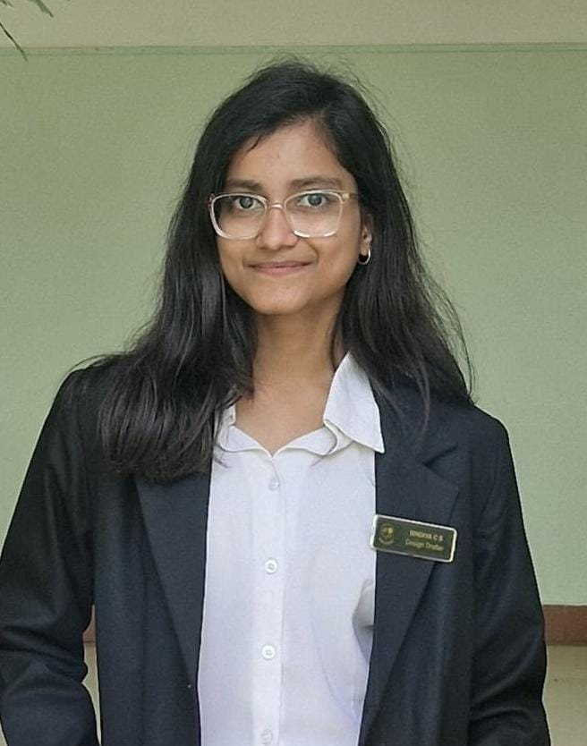

✦
Personal Profile
NameBindiya C S
LocationBengaluru, India
EducationB.E. — Computer Science and Engineering
CollegeEast Point College of Engineering and Technology
Graduation2026
COMPUTER SCIENCE & ENGINEERING
I enjoy building responsive web experiences and exploring how cloud technologies make applications scalable, reliable, and secure. I'm strengthening my skills in AWS, web development, and application design through hands-on projects and structured learning.

A LITTLE ABOUT ME
Personal details, interests, and the skills I'm building.
Technologies and tools from my current learning and project experience.
Exploring AWS compute, storage, databases, networking, identity and access management, reliability, monitoring, and cloud pricing.
MY JOURNEY SO FAR
A snapshot of my education, cloud learning, and certifications.
2026
East Point College of Engineering and Technology, Bengaluru
CGPA: 8.12023
Advityapu College, Hoskote, Bangalore Rural
90.67%CURRENT FOCUS
Learning AWS global infrastructure, EC2, S3, RDS, VPC, security, shared responsibility, high availability, scalability, monitoring, and cost management.
THINGS I'VE BUILT
Practical projects that helped me grow my programming skills.
Responsive e-commerce interface for desktop and mobile, with cached resources and offline access for a more resilient browsing experience.
An AI-powered health and wellness application focused on data-driven nutrition and personalized wellness, with features for allergen discovery, health-condition information, allergy tracking, and gym diet planning.
LET'S CONNECT
Have an opportunity, project idea, or a question? Send me a message.
I'm interested in opportunities to learn, contribute, and grow in software development and cloud computing.
✉